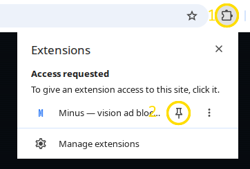
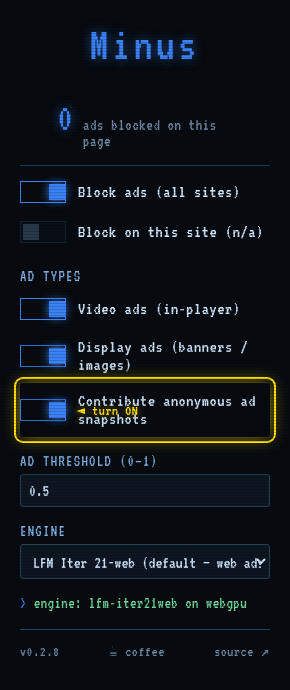

Click the 🧩 puzzle-piece icon at the top-right of your browser (①), then click the 📌 pin next to Minus (②).

① open the Extensions (🧩) menu → ② click the pin beside Minus
Chrome can't pin an extension for you — one click keeps Minus one click away. Once pinned you'll see a small M icon: blue at rest, red while it's blocking.
Open any ad-heavy site. Detected ads get covered with a Spanish flashcard, and the icon shows a count of what it blocked on the page.
Changed your mind about an overlay? Hover it and hit ✕ to reveal the ad underneath.
The popup lets you turn blocking on/off (globally or per-site), pick video vs display ads, tune the threshold, and choose the engine.
Minus improves when it sees the ads it misses (and the things it shouldn't cover). You can opt in to send anonymous snapshots:
Click the Minus icon → turn on “Contribute anonymous ad snapshots” (circled below). It's off by default. When on, Minus sends only the cropped image of a detected ad plus its hostname — no page content, no browsing history, no identity. Clicking ✕ on an overlay retracts that snapshot before it's ever sent, and there's a 10-minute local cool-down.

the toggle in the Minus popup — flip it on